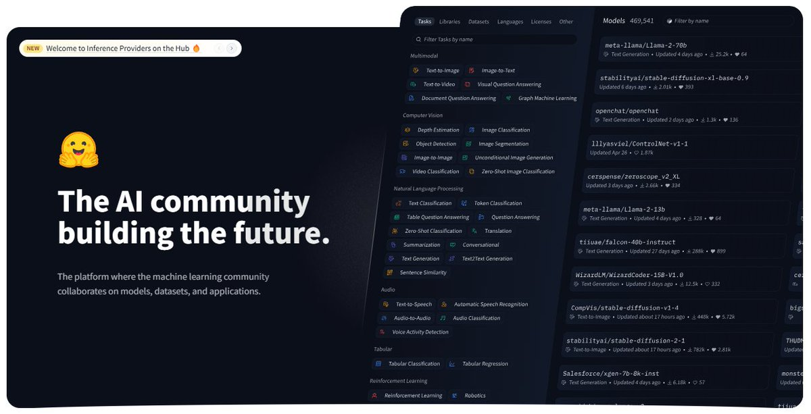

How to get URL link on X (Twitter) App
https://x.com/linusekenstam/status/1727096133359669743?s=48&t=NPkDHhml42BIT_a7KNQBVA/video/1
https://x.com/MagicAmish/status/1884424885289771296

https://twitter.com/arpit20adlakha/status/1884966452840775787
• • •